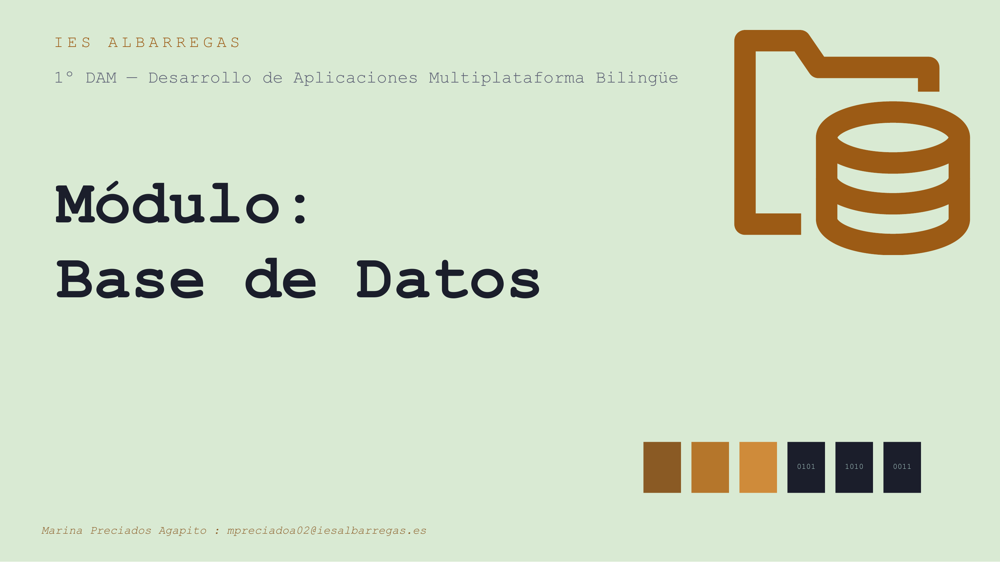
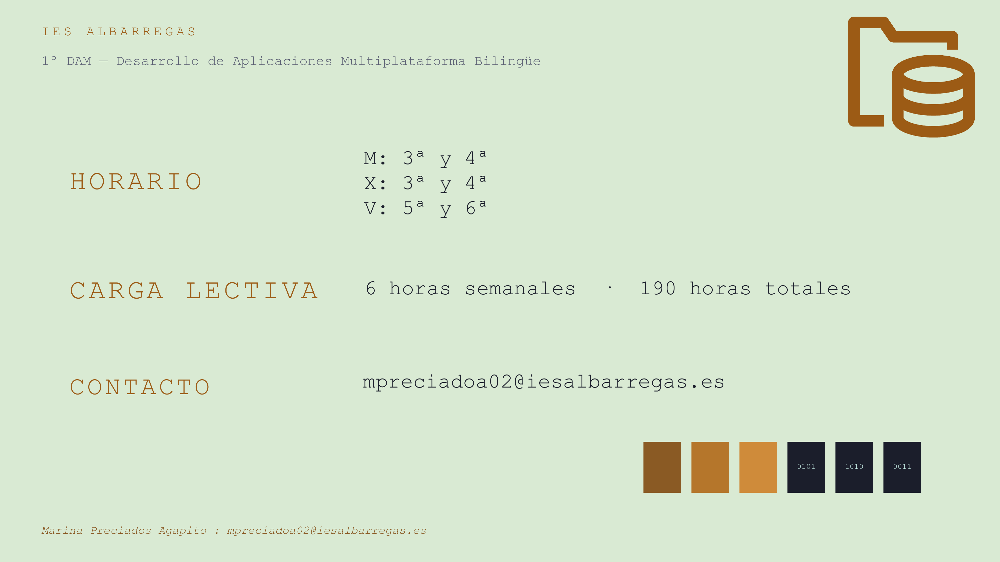
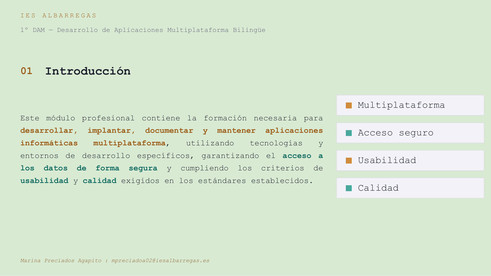
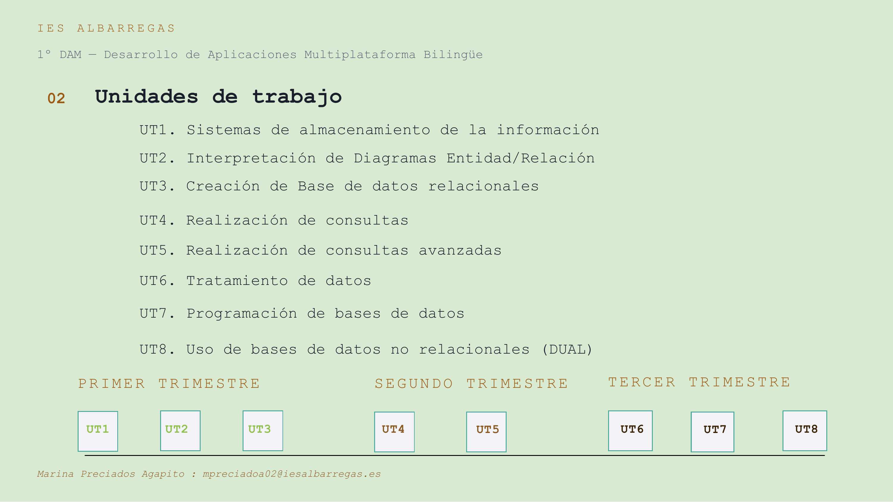
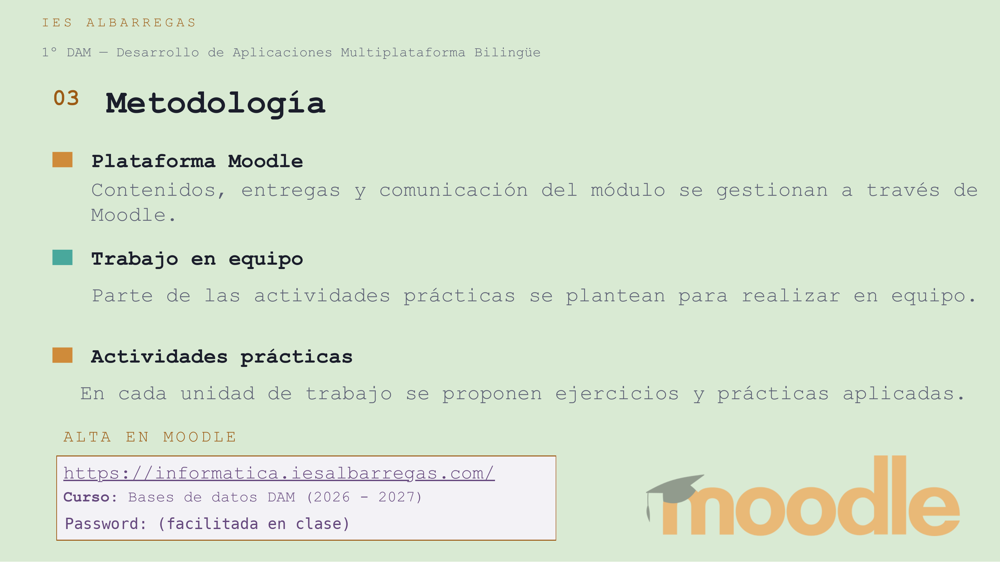
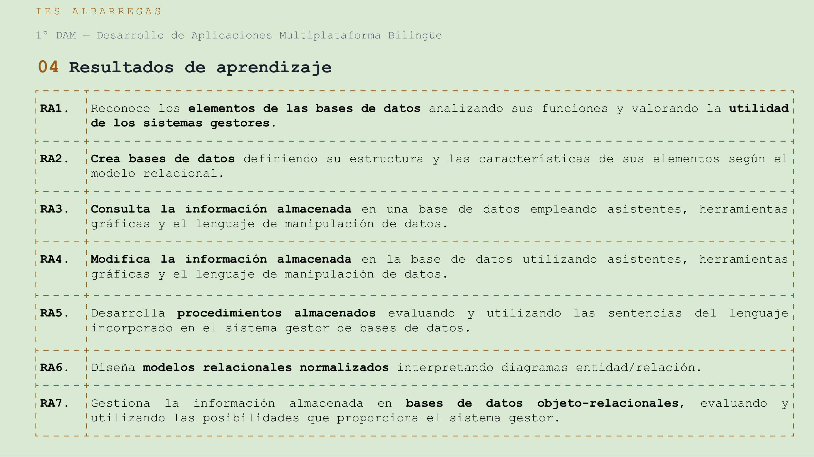
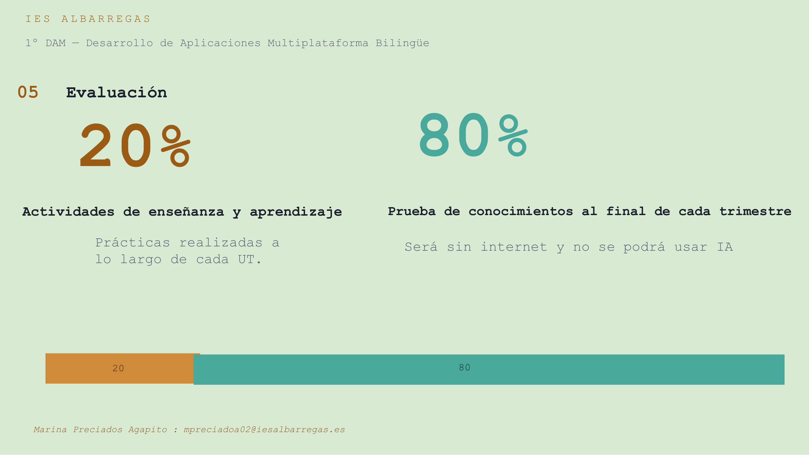
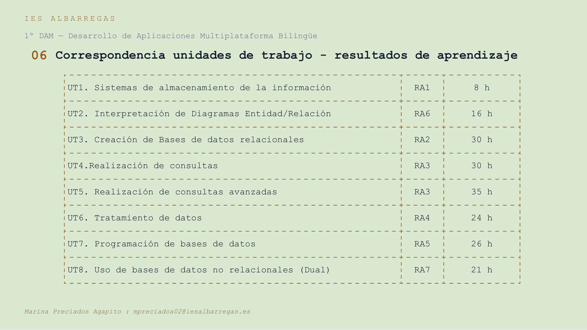
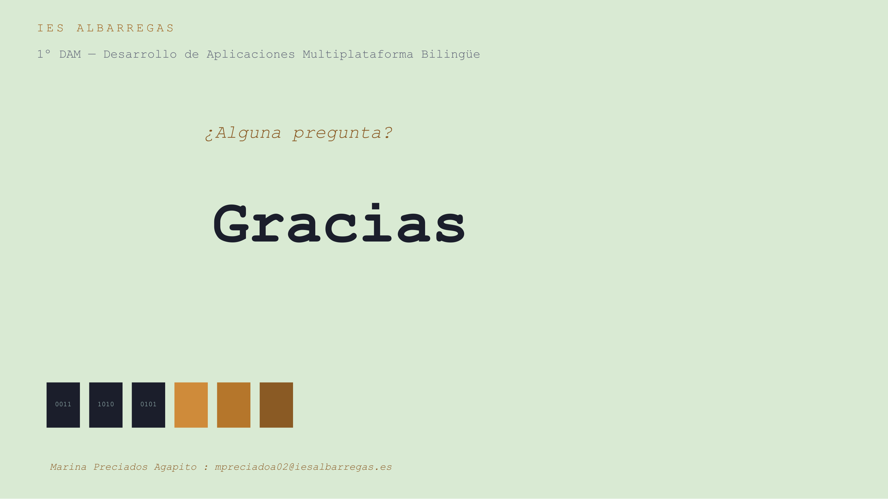

Las 9 páginas del PDF de presentación del módulo, tal cual, en su diseño original.
La página 5 (Metodología) oculta la contraseña de acceso a Moodle por seguridad, ya que esta página es pública. El resto del contenido es idéntico al PDF original.








